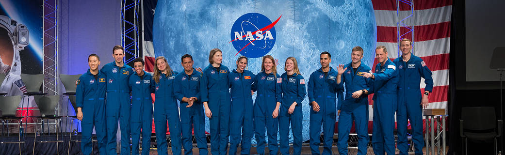

More than 12,000 people applied to be an astronaut between March 2 and March 31, 2020. The astronaut selection committee is now in the process of reviewing those applications. NASA expects to announce its selections in mid-2021.
To date, NASA has selected 350 astronaut candidates to fly on its increasingly challenging missions to explore space. More are needed to see the space station into its third decade of science in low-Earth orbit and propel exploration forward as part of the Artemis missions and beyond.
The first U.S. astronauts were selected in 1959, before human spaceflight operations began. NASA asked the military services to provide a list of personnel who met specific qualifications. After stringent screening, NASA announced its selection of seven men, all pilots, as the first American astronauts. NASA has selected 22 more groups of astronauts since the “Original Seven.” The backgrounds of NASA’s latest group of Astronaut Candidates include schoolteachers, doctors, scientists, and engineers.
